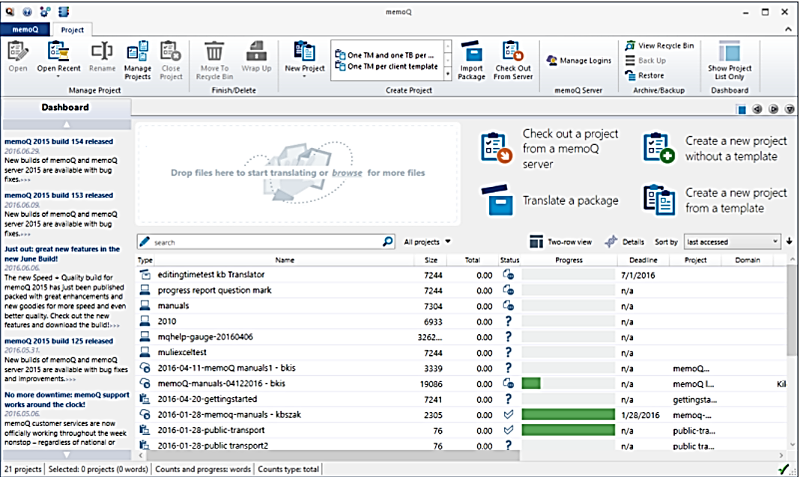
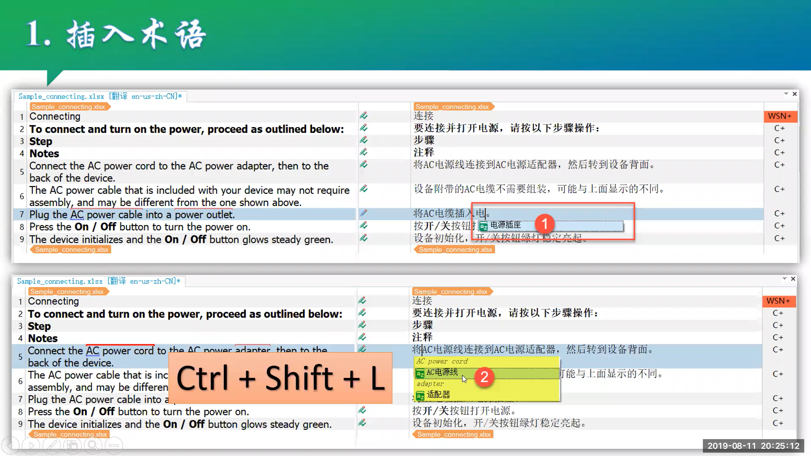

Course Portal 2026
把翻译技术学成一套能交付的工作流
面向语言类专业学生的智能翻译技术课程空间，聚合 CAT 工具、自主课件、智能体设计、VibeCoding 与课堂交流。
Learning Stack
4 条主线
01
CAT 基础
MemoQ / Trados / 术语库 / 翻译记忆库
02
智能体设计
任务拆解、工具调用、质量检查
03
VibeCoding
用 AI 协作开发翻译应用原型
04
课堂协作
问题池、项目组、作品展示

2
套课件
235
页可浏览内容
4
个学习模块
1
个课程交流区
Self Learning
自主学习区
已有 PPT 被整理为网页课件，支持按主题分节浏览、上一页/下一页切换、关键词搜索与进度记录。

Translation Tech Lab
研发实验室
围绕“会用工具、能设计流程、能做原型”组织训练，把翻译技术能力落到可演示作品。
MemoQ 与 CAT 工作流
理解翻译记忆库、术语库、项目包、审校与质量检查，把手工翻译流程转换为可管理的生产流程。
- 术语抽取与术语库维护
- 翻译记忆库创建、复用与清洗
- 项目交付与质量报告解读
Trados 2022 项目实践
从单个 Word 文档翻译走向复杂项目管理，熟悉文件类型、资源配置、批处理任务与定稿交付。
- 界面模块与项目结构
- 翻译记忆库、术语库、QA 检查
- 报告、统计、签发与项目归档
智能体设计
把翻译任务拆成可复用的智能体流程：角色、输入、工具、记忆、检查清单与人工确认节点。
- 翻译智能体任务图
- 术语检索与译后编辑 Agent
- LLM-as-judge 质量评估
VibeCoding
用 AI 协作完成小型翻译应用原型，从需求描述、界面搭建到本地调试与云端部署。
- 翻译术语查询网页
- 译后编辑打分面板
- 双语语料清洗与可视化工具
Class Forum
学生交流区
课堂问题、工具报错、项目想法和作品链接可以先记录在本地问题池，再同步到课程讨论区。
Instructor
联系教师
朱华
天津外国语大学高级翻译学院党委委员、硕士生导师；天津外国语大学智能语言服务产业学院执行院长；天津外国语大学人工智能翻译实验室主任。